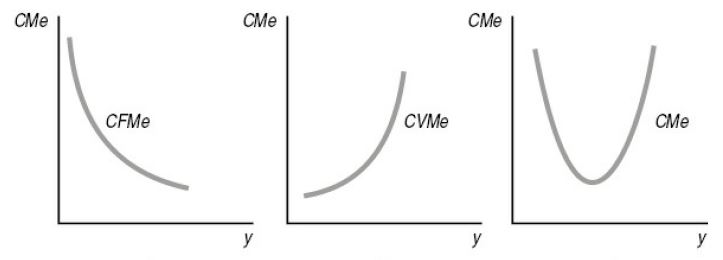
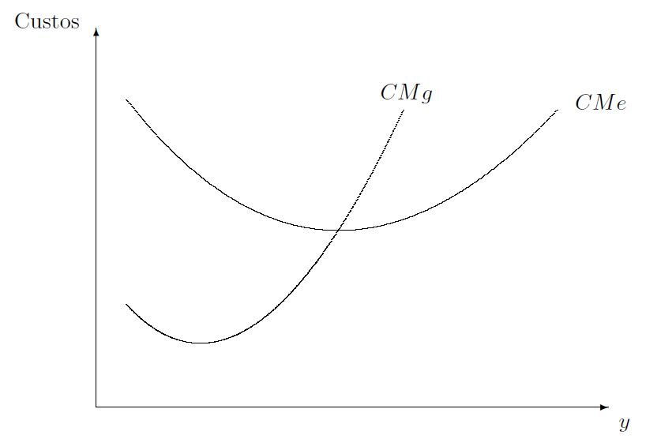
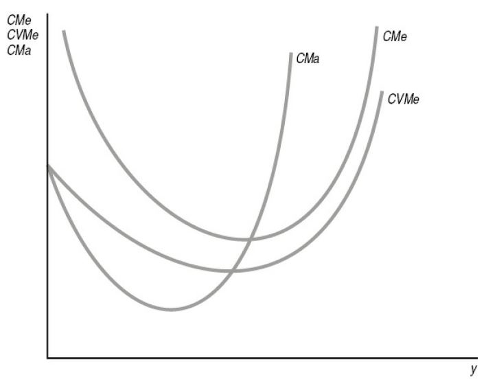

Curvas de Custos
Introdução
Em economia, é tradicional fazer uma distinção entre o curto prazo e o longo prazo.
Embora uma definição temporal precisa não possa ser fornecida para esses termos, o objetivo geral da distinção é diferenciar um curto período durante o qual os agentes econômicos tem apenas uma flexibilidade limitada em suas ações e um período mais longo que proporciona maior liberdade.
Essa distinção é particularmente importante na teoria da firma e seus custos, isso porque economistas estão interessados em analisar as reações da oferta em diferentes intervalos de tempo.
Função custo no curto prazo
Função custo no curto prazo
Função custo de curto prazo. A função custo de curto prazo (ou função custo restringida) é a função que fornece o custo total mínimo necessário para atingir uma meta de produção \(q\) de um bem quando a firma não pode ajustar a quantidade de pelo menos um dos seus fatores de produção.
Formalmente, suponhamos que no curto prazo o fator de produção capital, utilizado pela firma, seja fixo em um nível predeterminado \(\bar{k} > 0\). Assim, a função custo de curto prazo é dada por: \[C_{CP}(v, w, q; \bar{k}) = \min_{l} v\bar{k} + w l \quad \text{s.r.} \quad q = f(\bar{k}, l). \qquad(1)\]
Função custo no curto prazo
No caso de apenas um insumo variável, a escolha ótima da firma é óbvia: é a quantidade mínima do insumo variável que é capaz de produzir \(q\) unidades do bem final.
Para o caso de vários insumos, a escolha não é tão simples, já que a firma pode escolher a substituição entre os insumos variáveis existentes.
Função custo no curto prazo
Como estamos considerando o caso de apenas um insumo variável, as demandas contingentes de insumos de curto prazo podem ser representadas como: \[\begin{aligned} k^* &=& \bar{k}, \\ l^* &=& l_{CP}(v, w, q; \bar{k}). \end{aligned} \qquad(2)\]
A demanda pelo insumo trabalho depende do nível que a firma possui do fator capital, \(\bar{k}\).
Função custo no curto prazo
Dadas as demandas contingentes de insumos de curto prazo, a função custo de curto prazo é obtida simplesmente substituindo tais demandas na função-objetivo do problema de minimização de custos de curto prazo: \[C_{CP}(v, w, q; \bar{k}) = vk^* + wl^* = v\bar{k} + wl_{CP}(v,w,q;\bar{k}). \qquad(3)\]
Note que o custo variável de curto prazo é \(CV_{CP} = wl_{CP}(v,w,q;\bar{k})\) e o custo fixo de curto prazo é \(CF_{CP} = v\bar{k}\).
Funções custos: definições
Os custos totais de uma firma podem ser divididos em várias categorias.
Custo fixo. O custo fixo de uma firma é a parte do custo que não varia com a quantidade produzida. Dito de outra forma, os custos fixos são aqueles associados aos fatores de produção fixos - fatores cujas quantidades utilizadas independem do nível de produção e, sobretudo, recebem pagamento haja ou não produção. Exemplos: aluguel, contador, segurança, etc.
Custo variável. O custo variável é a parte do custo que varia com a quantidade produzida. Exemplos: gastos com mãos-de-obra, insumos variáveis, etc.
A classificação de um custo como fixo ou variável depende do horizonte temporal da análise (no longo prazo, todos os custos são variáveis).
O custo total é a soma do custo fixo e do custo variável.
Funções custos: definições
Outros dois tipos de custos importantes são custos irrecuperáveis ou afundados (sunk costs) e custos quase-fixos.
Custos irrecuperáveis ou afundados. São tipos de custos fixos que uma vez incorridos não podem ser recuperados caso a firma decida não produzir (sair do mercado). Exemplo: bens de capital com elevado grau de especificidade de uso apresentam mercados de revenda e de aluguel pouco desenvolvidos ou inexistentes, de maneira que os custos irrecuperáveis associados são elevados.
Custos quase-fixos. Custos quase-fixos ocorrem apenas se a firma decide produzir uma quantidade positiva do bem. Se ela produz zero, não gasta nada desse custo. Se ela produz qualquer quantidade positiva, ela gasta um valor fixo.
Em suma, os custos fixos independem do nível de produção e têm de ser pagos mesmo que a firma não produza. Enquanto que os custos quase-fixos, embora também independentes do nível de produção, só precisam ser pagos se a firma produzir uma quantidade estritamente positiva.
Custo médio de curto prazo
Custo médio de curto prazo. É o custo mínimo por unidade produzida quando pelo menos um dos fatores de produção é fixo: \[CMe_{CP}(v,w,q;\bar{k}) \equiv \frac{C_{CP}(v,w,q;\bar{k})}{q} = \underbrace{\frac{v\bar{k}}{q}}_{\color{red}{CFMe_{CP}}} + \underbrace{\frac{wl_{CP}(v,w,q;\bar{k})}{q}}_{\color{red}{CVMe_{CP}}}. \qquad(4)\]
Como se pode observar, o custo médio de curto prazo pode ser decomposto em duas parcelas:
Custo fixo médio de curto prazo: \(CFMe_{CP}(v,w,q;\bar{k}) \equiv \frac{v\bar{k}}{q}\).
Custo variável médio de curto prazo: \(CVMe_{CP}(v,w,q;\bar{k}) \equiv\frac{wl_{CP}(v,w,q;\bar{k})}{q}\).
Custo médio de curto prazo
Figura 1: Curvas de custo médio de curto prazo: (a) custo fixo médio, (b) custo variável médio, (c) custo médio. Fonte: Varian (2006).
O custo fixo médio é sempre decrescente na quantidade produzida.
O custo variável médio pode ser decrescente inicialmente mas, como alguns fatores são fixos, ele se tornará crescente quando a produção aumentar.
O custo médio é a soma das duas curvas anteriores.
Custo médio de curto prazo
Para quantidades pequenas de produção, boa parte dos custos totais são custos fixos.
Para níveis altos de produção, esses custos fixos são diluídos e irão compor uma parte menor dos custos totais.
Como a curva de custo médio é a soma das curvas de custo fixo médio e custo de variável médio, os custos médios serão decrescentes para níveis baixos de produção, em razão da predominância dos custos fixos médios sobre custos variáveis médios.
Por outro lado, a curva de custo médio será crescente para níveis altos de produção, já que a relação entre custos fixos médios e custos variáveis médios se invertem.
Portanto, o formato mais comum para a curva de custo médio é em \(U\), como ilustrado na Figura 1.
Custo marginal de curto prazo
- Custo marginal de curto prazo. É a variação do custo total mínimo gerada pela variação em uma unidade de produção, em uma situação em que a firma não pode ajustar a quantidade de pelo menos um fator de produção: \[CMg_{CP} \equiv \frac{\partial C_{CP}(v,w,q;\bar{k})}{\partial q} = \frac{\partial CV_{CP}(v,w,q;\bar{k})}{\partial q}. \qquad(5)\]
Custo médio \(\times\) custo marginal
Tomando a derivada da função de custo médio de curto prazo, temos o seguinte resultado: \[\frac{\partial CMe_{CP}}{\partial q} = \frac{1}{q}[CMg_{CP} - CMe_{CP}]. \qquad(6)\]
Quando \(CMg_{CP} < CMe_{CP}\), a curva de custo médio de curto prazo é estritamente decrescente.
Quando \(CMg_{CP} > CMe_{CP}\), a curva de custo médio de curto prazo é estritamente crescente.
Quando \(CMg_{CP} = CMe_{CP}\), temos o ponto de mínimo do custo médio de curto prazo.
Custo médio \(\times\) custo marginal
Figura 2: Custo médio de curto prazo \(\times\) custo marginal de curto prazo. Fonte: Resende.
- Em resumo, a curva de custo marginal está abaixo da curva de custo médio quando esta é decrescente e acima da curva de custo médio quando esta é crescente. As duas curvas se cruzam no ponto mínimo da curva de custo médio.
Custo marginal \(\times\) custo variável médio
O custo marginal de curto prazo é igual ao custo variável médio de curto prazo quando a produção é nula, \(q = 0\).
Ademais, se o custo marginal é estritamente menor (maior) que o custo variável médio, então a função custo variável médio é estritamente decrescente (crescente), e a função custo marginal cruza a função custo variável médio no ponto de mínimo desta última.
Custo marginal \(\times\) custo variável médio
Figura 3: Curvas de custo de curto prazo. Fonte: Varian (2006).
Funções custo no longo prazo
Função custo de longo prazo
Função custo de longo prazo. É a função custo que fornece o custo total mínimo necessário para atingir uma meta de produção \(q\) de um bem quando a firma pode ajustar as quantidades de todos os seus fatores de produção.
Portanto, ela é a função custo \[C_{LP}(v,w,q) = C(v,w,q).\]
Custo médio de longo prazo
Custo médio de longo prazo
Custo médio de longo prazo. \(CMe_{LP}\) é o custo mínimo por unidade produzida quando todos os fatores de produção são variáveis.
Como não há custo fixo no longo prazo, o custo médio de longo prazo e o custo variável médio de longo prazo (\(CVMe_{LP}\)) são iguais: \[\begin{aligned} CMe_{LP} = CVMe_{LP} = \begin{cases} \frac{C(v,w,q)}{q}, \quad & \text{se} \quad q > 0, \\ 0, \quad \text{se} & \quad q = 0. \end{cases} \end{aligned} \qquad(7)\]
Custo marginal de longo prazo
- Custo marginal de longo prazo. É a variação do custo total mínimo gerada pela variação em uma unidade de produção, em uma situação em que a firma pode ajustar todas as quantidades dos fatores de produção: \[CMg_{LP} = \frac{\partial C_{LP}(v, w, q)}{\partial q} = \frac{\partial CV_{LP}(v,w,q)}{\partial q}. \qquad(8)\]
📚 Bibliografia
NICHOLSON, W.; SNYDER C. Teoria microeconômica: Princípios básicos e aplicações. Cengage Learning Brasil, 2019. Disponível em: app.minhabiblioteca.com.br/books/9788522127030
RESENDE, J. G. L. Microeconomia I: Notas de Aula.
VARIAN, H. R. Intermediate Microeconomics: A modern approach. 7.ed. New York: W.W. Norton & Company, 2006.